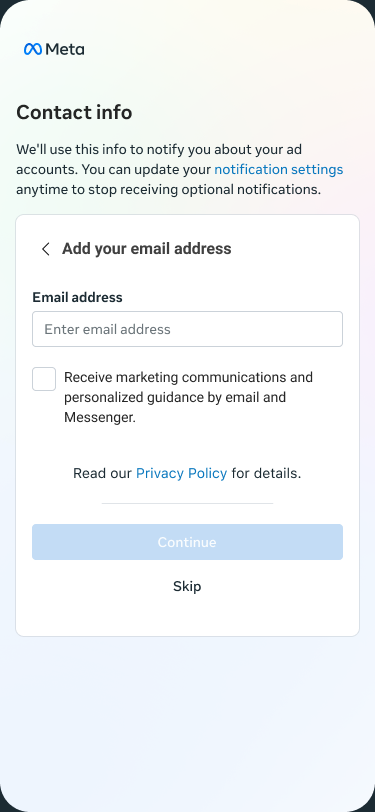
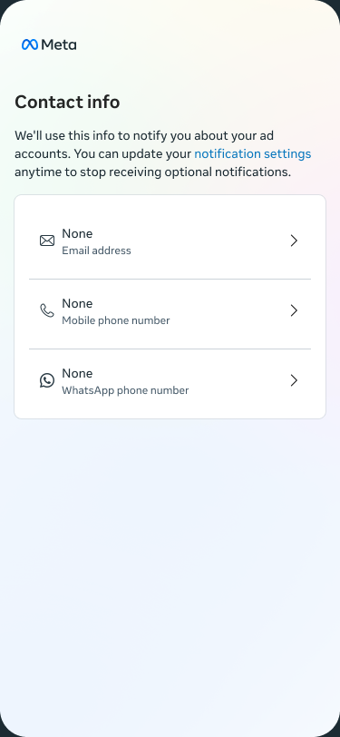
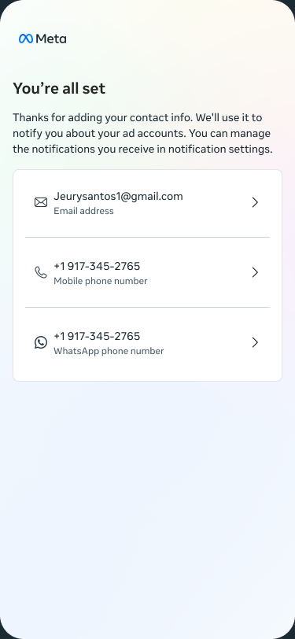
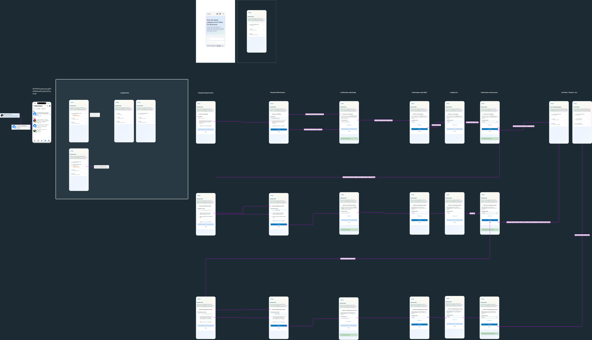
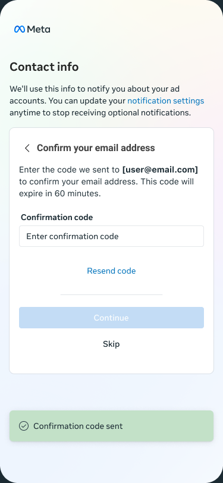
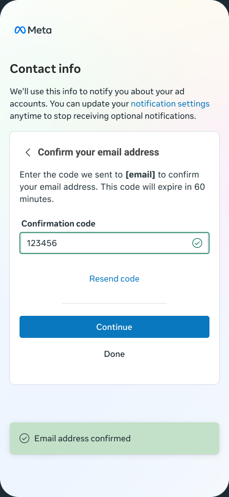

Small-business advertisers were missing the alerts that matter. I designed a mobile-web flow to collect and verify a contact — email, phone, or WhatsApp — in under two minutes.


Product Designer — end-to-end ownership
MobileSite (mobile web), 375×812
Business Communications (BizComm), Meta Ads
Ready for engineering handoff
In one line
In H1 2026, Meta's MobileSite had no structured way for advertisers to give and verify a contact — so account-critical alerts went undelivered. As the end-to-end designer, I built a mobile-first flow to close that gap. This is my part in that.
Before & after
The outcome the whole flow exists to produce — an advertiser who can actually be reached.
No verified contact — critical alerts silently fail to deliver.

Channels verified — notifications now actually land.
The problem
When I picked this up, advertisers on mobile web had no structured way to provide or verify contact info — so the messages they couldn't afford to miss simply didn't land.
For advertisers: notices about restrictions, payment failures, and policy violations went undelivered — leading to silent ad pauses, wasted spend, and angry escalations. For Meta: low contact coverage on mobile meant poor deliverability for legally-required and time-sensitive alerts. And I couldn't just reuse the desktop flow — mobile web has a smaller viewport, touch input, and a user base of on-the-go single-operator businesses.
Research & discovery
I grounded the work in delivery data and a competitive audit before drawing a single screen.
0.54% of AMD accounts are eligible for 2+ simultaneous banners — making contact delivery critical for overflow.
click rate on legacy banner pagination — discoverability of secondary messages was effectively zero.
target completion — these are single-operator businesses checking ads between tasks.
My competitive audit of Shopify, Google Ads (mobile), and Stripe converged on three patterns I carried in: inline over modals, sequential single-channel steps, and progressive disclosure to cut cognitive load. The desktop flow's modals were exactly what to avoid on mobile.
Design approach
The whole flow comes down to a handful of calls that protect momentum and respect the advertiser's time and agency.
Each channel is its own focused screen — its own validation, error handling, and success — instead of one long form.
Every step lives in a card on the page, keeping users grounded and avoiding modal a11y/usability traps on mobile.
Visible at every step — it respects agency and keeps momentum by advancing to the next unverified channel.
A confirmed code shows a success toast and moves to the next channel — removing a decision point.
The same flow handles non-strict (US, default opt-in) and strict (GDPR, explicit per-channel consent) by toggling the opt-in UI at the component level.
The flow
Email, phone, and WhatsApp run through the same Landing → Input → Verify → Completion pipeline — each channel parameterized, with empty / filled / loading / success / error states. Here's the path an advertiser walks:
A notification brings them to Contact info — email, phone, and WhatsApp status at a glance.
A focused screen per channel: enter the contact, opt in per region, Continue or Skip.
Enter the code; it validates, shows a success toast, and auto-advances to the next channel.
Partial or full — the advertiser is now reachable on every channel they verified.

Final design
Built entirely on Meta's Geo Design System — one focused task per screen, a visible Skip, and a success toast that carries the user forward.


Accessibility
I ran a WCAG 2.1 AA pass across all 21 screens — 10 criteria each — and wrote the findings into the Figma file so engineering inherits them.
Contrast ≥4.5:1, text ≥12px, logical reading order, reduced-motion-safe toasts.
Sub-44px touch targets, missing custom focus styles, icons needing aria labels.
Disabled CTA at 1.5:1 — below the 3:1 non-text minimum.
Try it live
A working prototype that matches the Figma pixel-for-pixel. Add a channel, enter a code, and watch it auto-advance — Skip is available at every step.
Outcome
✓ Ready for engineering handoffI shipped a complete, inspectable design — and a coded prototype so engineering aligns on real behavior, not static comps.
Reflections
I did the happy path first; some error patterns didn't perfectly mirror the input screens. Next time I'd define each screen's error state alongside it.
The 36px button height is a Geo constraint. I'd push earlier for a mobile override to clear the 44px minimum.
The flow jumps between screens — a brief skeleton or crossfade would make progress legible.
Toggling consent at the component level meant one flow served every region — far less to build, test, and maintain.